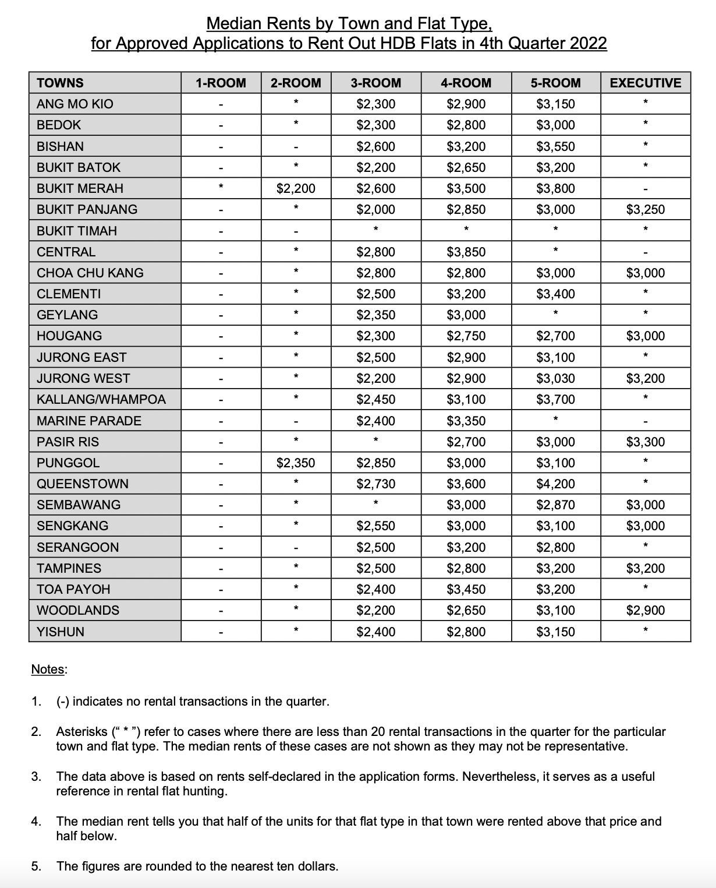

Week 10 Reflection
1. What is your project about?
Renting in Singapore.
2. What is the data you plan to use?
The data that I plan to use is the median cost of renting a HDB in each estate
in Singapore, taken from HDB website. Data is from the 4th quarter of 2022.
3. What is the question you plan to answer?
Questions: Where should I rent a HDB in Singapore? What can I afford in Singapore,
based on my salary?
4. Why is this an important question?
This is important because the cost of renting has risen exponentially since the
pandemic hit– rent prices rose by almost 30% in 2022 according to The Business Times.
According to Chinese News Asia (CNA), Singapore’s rental market showed no signs of
slowing down, making renting unaffordable for many. Thus, my website aims to provide
readers with options so that they can decide on the size and location of a flat that
they can afford.
5. Which rows and columns of the dataset do you plan to use, to answer this
question?
I will use selected columns and rows to answer this Question. Firstly, I will
select data from estates in different regions in Singapore- North, South, East and West.
I will be using rows: Punggol, Sengkang, Toa Payoh, Pasir Ris, Yishun,
Woodlands, Jurong East, Bukit Panjang
I will be using the data from columns: 3-ROOM,4-ROOM and 5-ROOM
This is because data of 2-ROOM flats are not available for many estates due to
the limited supply, thus it is easier to compare the data for 3-Room, 4-Room and 5-Room flats.
Data from HDB:
